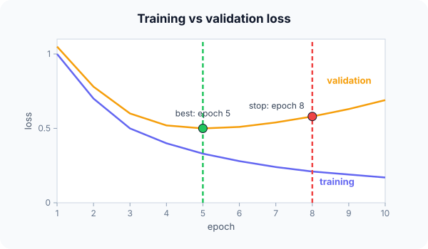

Prerequisites
The analogy
Everyday analogy
Think of revising for an exam with practice papers you haven't seen. At first your practice scores rise; after a while you only get better at the questions you have memorised, and your scores on new papers start dropping.
The sensible thing is to stop revising at your best practice score. Early stopping does that with the validation loss.
How it works
Setup: a validation set that is not used for training; a patience (how many epochs without improvement to tolerate); and a saved copy of the best weights.
Start with the loss curves by hand
Validation losses for epochs 1–10: 1.05, 0.78, 0.60, 0.52, 0.50, 0.51, 0.54, 0.58, 0.63, 0.69. Patience 3. Predict, then open "Check".
Example: predict before you read
Step 1. At which epoch is the validation loss lowest?
Check
Epoch 5, with 0.50.
Step 2. Cover the next line and guess: after epoch 5, how many epochs without improvement until patience runs out?
Check
Epochs 6, 7 and 8 are all worse than 0.50, so patience (3) runs out at epoch 8: training stops there.
Step 3. Which weights do you keep, and what happened to the training loss meanwhile?
Check
The weights saved at epoch 5. The training loss kept falling (0.33 → 0.21), the classic sign of overfitting.

Quick recall: Before reading further, cover the text above and say out loud: which curve tells you when to stop, and why?
Check your answer
The validation loss, because it measures performance on data the model is not trained on.
Finish the picture: choosing the patience
Validation losses can be noisy. Suppose they were 0.50 at epoch 5, 0.51 at 6, 0.49 at 7.
- Patience 1. Predict when training stops and which epoch is kept.
Check
It stops at epoch 6 and keeps epoch 5, missing the better epoch 7.
- Patience 3. Predict the outcome.
Check
Epoch 7 improves (0.49), so the counter resets; training continues and keeps epoch 7 or later. More patience tolerates noise but costs more epochs.
Quick recall: Without scrolling up, say out loud: why is the test set not used for early stopping?
Check your answer
Choosing the stopping epoch is a decision based on the data; using the test set for it would make the final test score optimistic.
Full worked calculation
The page's 10 epochs, followed with the exact bookkeeping an early-stopping callback does: best loss so far, the patience counter, and the gap between training and validation loss.
| Epoch | Train loss | Val loss | Best so far | Counter (patience 3) | Gap val − train |
|---|---|---|---|---|---|
| 1 | 1.00 | 1.05 | 1.05 (save) | 0 | 0.05 |
| 2 | 0.70 | 0.78 | 0.78 (save) | 0 | 0.08 |
| 3 | 0.50 | 0.60 | 0.60 (save) | 0 | 0.10 |
| 4 | 0.40 | 0.52 | 0.52 (save) | 0 | 0.12 |
| 5 | 0.33 | 0.50 | 0.50 (save) | 0 | 0.17 |
| 6 | 0.28 | 0.51 | 0.50 | 1 | 0.23 |
| 7 | 0.24 | 0.54 | 0.50 | 2 | 0.30 |
| 8 | 0.21 | 0.58 | 0.50 | 3 → stop | 0.37 |
-
1Epochs 1–5: improvement, save each time
$$0.50 < 0.52 \;\Rightarrow\; \text{best} = 0.50, \; \text{save weights}, \; \text{counter} = 0$$Every time the validation loss beats the best value so far, we store a copy of the weights and reset the counter.
-
2Epoch 6: first epoch without improvement
$$0.51 \ge 0.50 \;\Rightarrow\; \text{counter} = 1$$One bad epoch is not proof of overfitting; validation loss is noisy. The counter just starts.
-
3Epochs 7–8: the counter reaches the patience
$$0.54 \ge 0.50 \Rightarrow 2, \qquad 0.58 \ge 0.50 \Rightarrow 3 = \text{patience} \;\Rightarrow\; \text{stop}$$Three epochs in a row without beating 0.50: training stops at epoch 8. Epochs 9 and 10 are never run, which saves 20% of the compute here.
-
4Restore the best weights
$$\text{final model} = \text{weights saved at epoch } 5 \quad (\text{val loss } 0.50)$$The weights at epoch 8 are already worse (0.58). Early stopping always returns the saved checkpoint, not the last one.
-
5Read the gap
$$\text{gap} = 0.05 \to 0.17 \to 0.37 \qquad (\text{epochs } 1, 5, 8)$$Training loss keeps falling while validation rises: the growing gap is the signature of overfitting. The network is learning details of the training set that do not carry over.
-
6Effect of the patience
$$\text{patience } 1: \text{stop at epoch } 6, \qquad \text{patience } 3: \text{stop at epoch } 8$$Both return epoch 5's weights here. A small patience stops sooner but may quit during a temporary bump; a larger patience costs more epochs but survives noisy curves.
What the numbers tell us
Early stopping tracks the best validation loss, counts epochs without improvement, stops when the counter reaches the patience, and restores the best weights: here epoch 5.
It needs a validation set that is never trained on; otherwise the "best epoch" is chosen on data the model has memorised.
The rule in plain words
After every epoch, compute the validation loss. If it is the best so far, save the weights and reset the counter; otherwise increase the counter.
When the counter reaches the patience, stop and restore the saved best weights.
Quick recall: Before you read the code, describe early stopping with patience, in your own words. Then check below.
Check your answer
After each epoch, if the validation loss beats the best so far, remember the epoch and reset a counter; otherwise add one to the counter, and stop when it reaches the patience.
The code
Read this code after you have found the stopping epoch by hand. It will make more sense.
int early_stop(double val[], int n_epochs, int patience, int out[]) { /* out = {best, stop} */
int best = 0, wait = 0;
for (int e = 0; e < n_epochs; e++) {
if (val[e] < val[best]) { best = e; wait = 0; } /* new best: save weights here */
else if (e > 0 && ++wait >= patience) { out[0] = best + 1; out[1] = e + 1; return 1; }
}
out[0] = best + 1; out[1] = n_epochs; /* ran out of epochs */
return 0;
}Definition
What you just did, in one line: early stopping ends training when the validation loss has not improved for a set number of epochs (the patience) and keeps the weights from the best validation epoch.
flowchart TD
A["train one epoch"] --> B["compute validation loss"]
B --> C{"best so far?"}
C -->|yes| D["save weights, reset counter"]
C -->|no| E["counter + 1"]
D --> A
E --> F{"counter = patience?"}
F -->|no| A
F -->|yes| G["stop, restore best weights"]
Putting numbers on it
Quick recall: Before looking at the formula, predict: with patience 1, when would training stop here?
Check your answer
At epoch 6, the first epoch without improvement after epoch 5.
The kept model is the epoch with the lowest validation loss among those trained:
$$e^* = \arg\min_{e \le e_{\text{stop}}} L_{\text{val}}(e) = 5, \qquad e_{\text{stop}} = e^* + \text{patience} = 8$$| Epoch | Train loss | Val loss | Counter |
|---|---|---|---|
| 4 | 0.40 | 0.52 | 0 (best) |
| 5 | 0.33 | 0.50 | 0 (best) |
| 6 | 0.28 | 0.51 | 1 |
| 7 | 0.24 | 0.54 | 2 |
| 8 | 0.21 | 0.58 | 3 → stop, keep epoch 5 |
Warning
Restore the best weights, not the last ones. At the moment training stops, the model has already been getting worse for "patience" epochs.
Exam tip
Read the curves: both falling → keep training; training falling but validation rising → overfitting, stop at the validation minimum. Mention patience and restoring the best weights.
Common mistakes
- Keeping the weights from the stopping epoch instead of the best epoch.
- Monitoring the training loss instead of the validation loss.
- Using a patience of 0 or 1 with noisy validation losses, which stops too early.
Try it yourself
Exercise 1 (warm-up)
Validation losses 0.9, 0.7, 0.72, 0.65, 0.66, 0.67, 0.68 with patience 2. When does training stop, and which epoch is kept?
Hint
The counter resets at every new best.
Answer
Best at epoch 2 (0.70); epoch 3 is worse (counter 1); epoch 4 improves (0.65, reset); epochs 5 and 6 are worse (counter 2): stop at epoch 6, keep epoch 4.
Exercise 2 (a bit harder)
Explain why early stopping acts like L2 regularization for gradient descent starting from small weights. Write your answer down before you open it.
Show answer
Weights start near zero and grow as training proceeds. Stopping early limits how far they can travel from zero, which, like an L2 penalty, keeps them small and the model simpler.
Did you know?
Did you know?
Early stopping has been used since the 1990s; Lutz Prechelt's 1998 paper "Early Stopping — But When?" compared many stopping rules.
Deep-learning libraries have it built in, for example Keras's EarlyStopping(patience=…, restore_best_weights=True).
Key points to remember
If you remember one thing from each line, remember the because.
- The validation loss decides because it measures generalisation, unlike the training loss.
- A rising validation loss signals overfitting because the model is fitting noise in the training set.
- Patience tolerates noise because one bad epoch doesn't mean the trend has turned.
- The best weights are restored because the last epochs before stopping were already worse.
- It regularizes like L2 because it limits how far the weights move from their small starting values.
Self-check questions
Answer these in order, out loud. They follow the page, so your answers become the script of your video.
- How is early stopping like revising with unseen practice papers?
Sample answer
You keep studying while your scores on new papers rise, and stop at your best score before memorising starts to hurt.
- With validation losses 1.05, 0.78, 0.60, 0.52, 0.50, 0.51, 0.54, 0.58 and patience 3, when do you stop and what do you keep?
Sample answer
Stop at epoch 8 and keep the weights from epoch 5, the lowest validation loss.
- Why does the code reset
waitto 0 when a new best appears?A good answer says what
waitcounts.Sample answer
waitcounts consecutive epochs without improvement; a new best breaks that run, so the count starts again. - So what is early stopping, in one sentence?
Sample answer
Stopping training when the validation loss stops improving for a number of epochs and keeping the best-validation weights.
- Why does the training loss keep falling while the validation loss rises?
A good answer mentions memorising.
Sample answer
The model keeps fitting the training data, including its noise, which doesn't generalise, so performance on unseen validation data gets worse.
- What does patience control, and what are the trade-offs?
Sample answer
How many non-improving epochs to tolerate; small patience may stop too early on noise, large patience wastes epochs.
- Why must you restore the best weights?
Sample answer
When training stops, the model has been getting worse for "patience" epochs, so the last weights are not the best ones.
- If you had to teach this to a friend in 2 minutes, what would you leave out, and why?
Sample answer
I'd leave out the L2 connection and noisy-patience details. I'd keep the revision analogy, the two curves with the minimum at epoch 5, and "stop at the validation minimum, keep the best weights".
External resources
- Keras docs: EarlyStopping: patience and restore_best_weights in practice.
- Wikipedia: Early stopping: theory and the link to regularization.
- Google ML Crash Course: Interpreting loss curves: reading training and validation curves.
Videos
- YouTube search: early stopping explained: pick a short explainer.